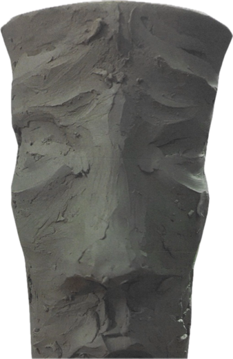
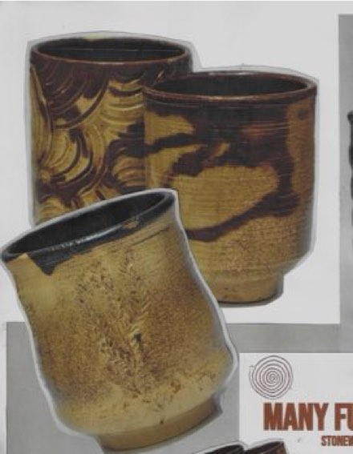

1 · Cover: move your mouse over it, and reload for new swirls

onAcabedo wells
Soft colour haze, with the name centred, thicker spiral swirls mixed in, the section list underneath, and swirls that lean away from your cursor and brighten
2 · Section page: ceramics (click a print)
onAall work
ceramics
hard work kills
anatomy of a mistake
neighborhood flowers
memory cups

many funky mugs
Tidy but wonky rows, light, with the section colour on its spiral and on the occasional bit of tape
3 · Piece page: big and calm
← ceramics
hard work kills
stoneware, 2025 two vases about what years of labour leave on a face
next: anatomy of a mistake →
Large photos stacked, a short caption, a quiet link to the next piece; only a few swirls at the edges